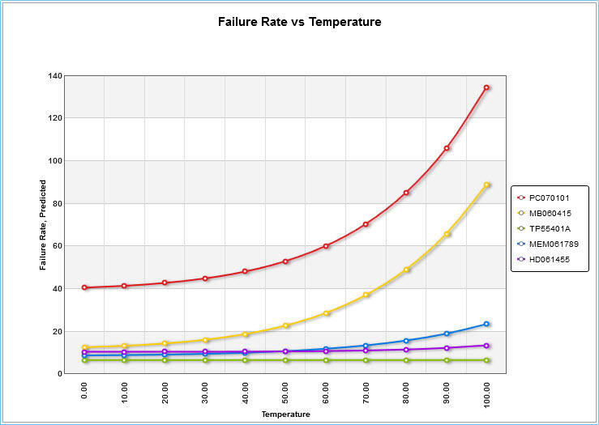
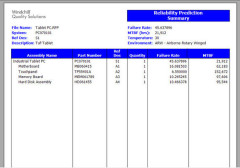

Windchill Prediction
formerly Relex Prediction
Windchill Prediction provides the basis for the reliability evaluation and analysis of systems by allowing you to to estimate component and system failure rate, MTBF and reliability early in the design process. Using Windchill Prediction, you can identify the leading contributors to system failure and measure the impact of temperature, environment and stress on the system. Known as the standard in a broad range of industries, with Windchill (Relex) Prediction you can be assured you are using the trusted brand name in prediction analytics.
 Increased Productivity. Easily import BOMs from, or export calculated results to, commonly used formats like Microsoft Excel, Microsoft Access, XML, and plain text files. The extensive parts libraries, including NPRD/EPRD, make prediction analyses immeasurably easier and more efficient by providing instant access to an extensive database of component information. Build company-specific parts and assemblies libraries to drastically reduce time calculating failure rates on components used most frequently.
Advanced Prediction Methodology. Windchill Prediction goes beyond the prediction standard methodology by adding an impressive number of functional enhancements to ensure all your prediction analysis needs are covered. Perform mission profile modeling, introduce reliability allocation methods, and model both active and dormant states. Additional features include derating analysis; user-defined parts, quality levels, and environments; and support for global data modifications.
 Professional Outputs. Windchill Prediction is supplied with a range of industry standard reports and graphs. Easy-to-use Report and Graph Wizards provide complete user customization of outputs to fit your specific needs, without the need for IT experts. Once complete, reports and graphs can be printed or saved directly to Microsoft Word or Excel, and Adobe PDF.
Consulting Services. For clients that have an MTBF requirement, but don't have the time or in-house expertise, Crimson Quality offers MTBF Consulting Services.
Reliability Prediction Data Sheet
6469_Windchill_Prediction_DS_EN.pdf
Adobe Acrobat document [265.0 KB]